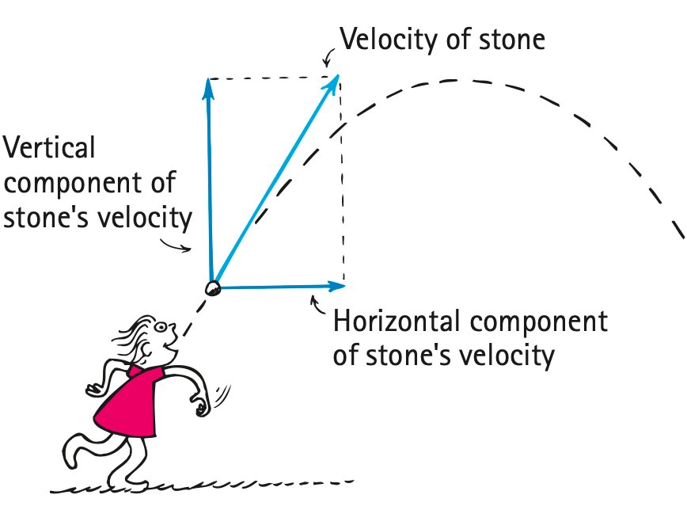
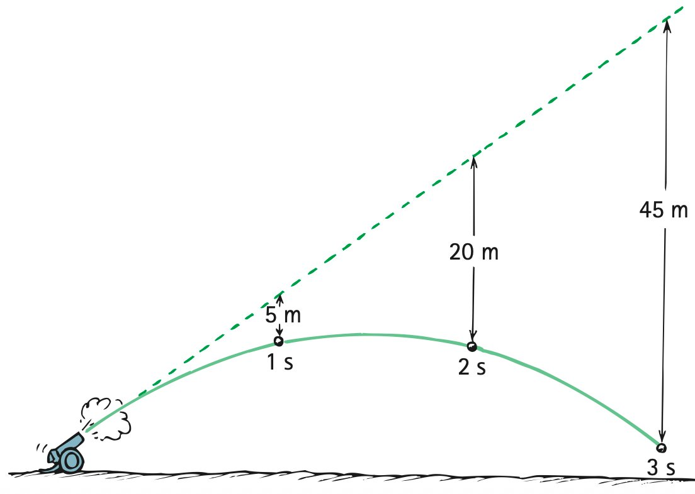
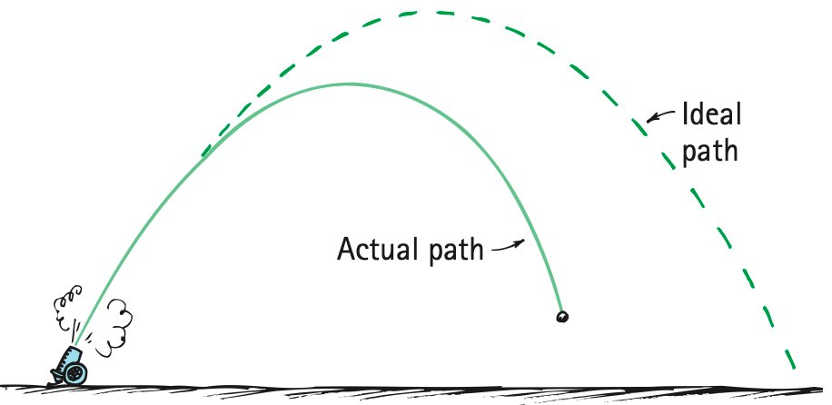

Projectile Motion
Mathematical idea: Horizontal displacement follows constant-velocity motion while vertical displacement follows gravitational acceleration.
You will use the textbook’s motion sequences and velocity vectors to separate components, explain the parabolic path, and critique flawed projectile models.
Learning Target
Students will model projectile motion by separating horizontal and vertical components of motion.
I can statements
- I can define a projectile as an object moving under the influence of gravity after being launched.
- I can explain why horizontal motion remains constant when air resistance is ignored.
- I can explain why vertical motion accelerates downward due to gravity.
- I can describe projectile motion as the combination of horizontal constant velocity and vertical accelerated motion.
- I can critique projectile-motion explanations that confuse horizontal and vertical motion.
Vocabulary
These are words you will see in this section. Do not define them yet.
- projectile
- component
- horizontal component
- vertical component
- trajectory
- parabola
- independent
- range
Use the preview activity to decide which words you already know, recognize, or do not know yet. Watch for these words in bold when they are first introduced or defined in the reading.
Preview: Skim Before You Read
Directions
Before reading closely, skim the vocabulary list and the section. Look at titles, headings, bold words, pictures, captions, diagrams, tables, and formulas. Do not try to understand everything yet. Your job is to notice what already looks familiar and make predictions about what this section may explain.
Step 1 — Sort the vocabulary. Write each vocabulary word in the column that best matches what you know right now. You may move a word later.
| Know for sure | Recognize | Don’t know yet |
|---|---|---|
Step 2 — Skim the section. Record what catches your attention before you read closely.
| What I noticed | |
|---|---|
| What I predict | |
| What I wonder |
Content: Read, Look, Annotate, Apply
Directions
Read in short chunks. Annotate the prose and the figures together: underline evidence, circle or highlight bold vocabulary, label arrows or measured features, connect a sentence to an image, and write short questions or connections in the margins.
Reading 1: Separate the Motion into Two Directions
A projectile is an object that, after being launched, continues moving by inertia while gravity is the significant force shaping its motion. Without gravity, it would continue along a straight-line path; gravity continually bends that path downward.
To make the curved motion easier to understand, we resolve velocity into a component in each perpendicular direction. The horizontal component behaves like constant-velocity motion when air resistance is ignored because there is no horizontal force. The vertical component behaves like free fall because gravity acts downward.


Image read: Compare spacing in equal time intervals. Mark “same spacing” on the horizontal sequence and “increasing spacing” on the vertical sequence.
The two components are independent: horizontal motion does not make the object fall faster, and vertical acceleration does not remove the horizontal velocity when air resistance is ignored. The actual velocity at any instant is the vector combination of the two.

Image read: Trace the horizontal and vertical component arrows. Explain how their vector combination points along the stone’s motion.
Stop and Discuss
- What evidence in the spacing diagrams shows constant horizontal velocity and accelerated vertical motion?
- Why is a continuing forward force not needed to keep the horizontal component of velocity constant after launch?
Teacher answer: A projectile keeps its horizontal motion by inertia while gravity changes the vertical motion. The source’s side-by-side horizontal and vertical sequences make the separation visible.
Example 1: Two components at once
A ball rolls horizontally off a table. Ignore air resistance.
- Describe the horizontal velocity after the ball leaves the table.
- Describe the vertical acceleration and explain which force causes it.
Teacher answer: Horizontal spacing stays equal in equal times; vertical spacing grows because downward velocity changes. The two components can be analyzed separately.
You Try It 1: Kicked ball after contact
A soccer ball leaves a player’s foot moving forward and upward. Ignore air resistance.
- What happens to the horizontal component of velocity after contact ends?
- What happens to the vertical component of velocity on the way up and why?
Teacher answer: Once a ball leaves the hand, the hand no longer supplies a forward force. Ignoring air resistance, horizontal velocity remains constant while gravity accelerates it downward.
Reading 2: Superposition Produces a Curved Path
The trajectory is the path followed by a moving object. The textbook superposition figure builds projectile motion in stages: horizontal motion by itself, vertical falling by itself, then the two motions combined.

Image read: Follow one equal-time step across all four panels. Connect the horizontal displacement from one panel with the vertical displacement from another.
When horizontal velocity stays constant and vertical acceleration is constant downward, the ideal trajectory is a parabola. The curve does not require a force pointing along the path; it is the geometric result of constant sideways motion plus increasing downward motion.
A powerful test is to compare two balls released from the same height at the same instant—one dropped and one projected horizontally. Their horizontal motions differ, but their vertical motions are the same.

Image read: Match equal-time horizontal lines across the two paths. What do they show about each ball’s vertical position at the same time?
Ignoring air resistance, both balls hit the ground at the same time because horizontal speed does not change the vertical fall time.
Stop and Discuss
- How does the superposition figure explain the curved path without inventing a forward force?
- Why do a dropped ball and a horizontally launched ball from the same height land at the same time?
Teacher answer: The superposition figure combines constant horizontal motion with vertical free fall. The resulting trajectory curves into a parabola.
Example 2: Drop versus launch
Ball A is dropped from a table while Ball B is launched horizontally from the same height at the same instant.
- Compare their vertical accelerations.
- Compare their times to hit the floor, ignoring air resistance.
Teacher answer: The dropped and horizontally launched balls fall the same vertical distance in the same time and therefore land together when launched from the same height, ignoring air resistance.
You Try It 2: Faster horizontal launch
Two balls leave the same table horizontally at different speeds at the same instant.
- Which ball travels farther horizontally before landing?
- Do they have different fall times? Explain using independent components.
Teacher answer: A faster horizontal launch increases range but does not change the time to fall from the same height because vertical motion is independent of horizontal speed.
Reading 3: Gravity Pulls the Projectile Below Its Inertial Path
For an object launched at an angle, imagine the straight-line path it would follow if gravity did not act. Gravity makes the projectile fall below that imaginary line by the same vertical distance a dropped object would fall during the same elapsed time.

Image read: Mark the dashed no-gravity path and the actual path. At 1 s, 2 s, and 3 s, identify the vertical drop below the dashed line.
The horizontal part still covers equal distances in equal times when air resistance is ignored. The vertical part follows the gravitational falling pattern. Keeping these two calculations separate prevents a common mistake: using a vertical falling equation for horizontal distance.
Velocity vectors along the path show the same separation. The horizontal component stays the same while the vertical component changes from upward, to zero at the top, to increasingly downward.

Image read: Compare the horizontal arrows at several points. Then track how the vertical arrows change before, at, and after the top of the path.
At the top of an angled trajectory, vertical velocity is momentarily zero, but the projectile is not at rest because horizontal velocity remains. Gravity still provides downward acceleration there.
Stop and Discuss
- How does the dashed-line image show that gravity changes only the vertical component in the ideal model?
- At the top of an angled projectile path, which velocity component is zero and which remains? What is the acceleration direction?
Teacher answer: Gravity makes the projectile fall below the straight inertial path by the same vertical amount it would fall from rest during the same elapsed time.
Horizontal constant-velocity motion:
$$x=v_xt$$Vertical drop from rest:
$$y=\frac{1}{2}gt^2$$Use these as separate component relationships. The same time $t$ connects the horizontal and vertical parts.
Example 3: Separate the calculations
A ball leaves a table horizontally at 8 m/s and remains airborne for 3 s. Use $g\approx10\text{ m/s}^2$.
- Calculate the horizontal distance traveled.
- Calculate the vertical distance fallen from its launch height.
Teacher answer: For 3 s, $x=v_xt=(8)(3)=24\text{ m}$ and $y=\frac12(10)(3^2)=45\text{ m}$. Keep the horizontal and vertical calculations separate.
You Try It 3: Component reasoning
A projectile is in the air for 2 s with a constant horizontal component of 6 m/s.
- Find its horizontal displacement.
- If it began with zero vertical velocity, find its vertical drop using $g\approx10\text{ m/s}^2$.
Teacher answer: At the top of an angled trajectory, the vertical velocity component is momentarily zero, but horizontal velocity remains. Acceleration is still downward.
Reading 4: Use the Model—and Know Its Limits
Ideal projectile motion assumes air resistance is small enough to ignore. In that model, horizontal velocity remains constant and gravity changes only vertical velocity. The horizontal range therefore depends on horizontal speed and how long the projectile stays in the air.
When air resistance matters, the horizontal component can decrease and the actual path falls short of the ideal parabola. The textbook comparison makes the limitation visible rather than hiding it.

Image read: Trace the ideal path and the actual path. Identify the evidence that air resistance reduces the forward motion.
A strong projectile model also keeps “velocity” separate from “acceleration.” At the top of a path, vertical velocity can be zero while downward acceleration remains. Likewise, a projectile can have forward horizontal velocity with no horizontal acceleration.
The tower example combines the components through shared time: determine the fall time from the vertical drop, then use that same time with the horizontal distance to find horizontal speed.

Image read: Label the 5-m vertical drop and 20-m horizontal displacement as separate components connected by the same flight time.
Stop and Discuss
- What assumption must be true for horizontal velocity to remain constant in the ideal projectile model?
- Why can vertical velocity be zero at the top while vertical acceleration is still nonzero?
Teacher answer: A model with shrinking horizontal arrows is incorrect when air resistance is ignored. Horizontal arrows should remain equal; vertical downward component changes with time.
Example 4: Critique the arrows
A student draws a projectile with horizontal velocity arrows that get shorter every second, even though the problem says to ignore air resistance.
- Identify the error in the model.
- Describe how the horizontal arrows should be revised and what should change vertically instead.
Teacher answer: Air resistance can reduce horizontal speed and make the real trajectory fall short of the ideal parabolic path, as shown by the source comparison.
You Try It 4: Tower model
A ball is launched horizontally from a 5-m-high tower and lands 20 m away. Use the source’s approximation that a 5-m fall takes about 1 s.
- Estimate the horizontal launch speed.
- Explain why the vertical drop determines the flight time while the horizontal distance determines the horizontal speed.
Teacher answer: The 5-m drop takes about 1 s. A 20-m horizontal displacement in about 1 s means the horizontal launch speed is about 20 m/s.
Vocabulary: Define the Terms
You have now seen these words in the reading, images, and practice. Use this table to consolidate the physics meaning of each term.
| Vocabulary term | Definition |
|---|---|
| projectile | An object that, after launch, continues by inertia while gravity is the significant force shaping its motion. |
| component | One perpendicular part of a vector quantity used to analyze motion separately by direction. |
| horizontal component | The sideways part of velocity; it remains constant when air resistance is ignored because there is no horizontal force. |
| vertical component | The up-down part of velocity; it changes because gravity accelerates the object downward. |
| trajectory | The path followed by a moving object. |
| parabola | The ideal curved path of a projectile with constant horizontal velocity and constant downward acceleration. |
| independent | Able to be analyzed separately; horizontal motion does not change the vertical falling pattern and vice versa. |
| range | The horizontal distance traveled by a projectile. |
Summary
- A projectile is analyzed by separating horizontal and vertical components of motion.
- Ignoring air resistance, horizontal velocity is constant because no horizontal force acts.
- Vertical motion accelerates downward because gravity acts vertically.
- The combined constant horizontal motion and accelerated vertical motion produce an ideal parabolic trajectory.
- $x=v_xt$ and $y=\frac{1}{2}gt^2$ can be used separately with the same elapsed time.
- Air resistance makes the actual path differ from the ideal model and can reduce horizontal speed.
Teaching note: Strong summaries should explicitly separate cause: no horizontal force → constant horizontal velocity; gravity downward → changing vertical velocity.
Common Mistakes
| Mistake | Why it is tempting | Check instead |
|---|---|---|
| A forward force keeps a projectile moving horizontally. | The projectile continues moving forward after launch. | Inertia maintains horizontal velocity when no horizontal net force acts. |
| Horizontal speed changes because the projectile is falling. | The path is changing direction. | Separate components: gravity changes vertical velocity, not ideal horizontal velocity. |
| Velocity is zero at the top. | Vertical velocity is zero there. | For an angled launch, horizontal velocity remains, so total velocity is not zero. |
| Use $y=\frac{1}{2}gt^2$ for horizontal distance. | Both equations use time. | Use the gravitational equation only vertically; use $x=v_xt$ horizontally. |
What happens to the horizontal velocity component of an ideal projectile when air resistance is ignored?
A ball is launched horizontally at 5 m/s and is airborne for 2 s. Find its horizontal displacement and explain why gravity does not enter that horizontal calculation.
What is one thing you learned in this section? Explain it in at least one complete sentence.
What is one thing from this section you still need to understand or practice more? Be specific.